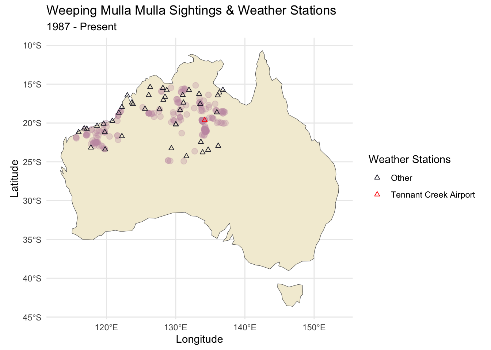
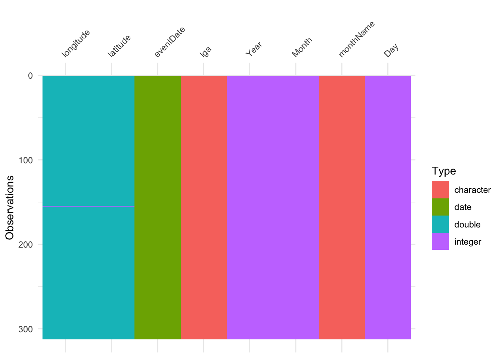
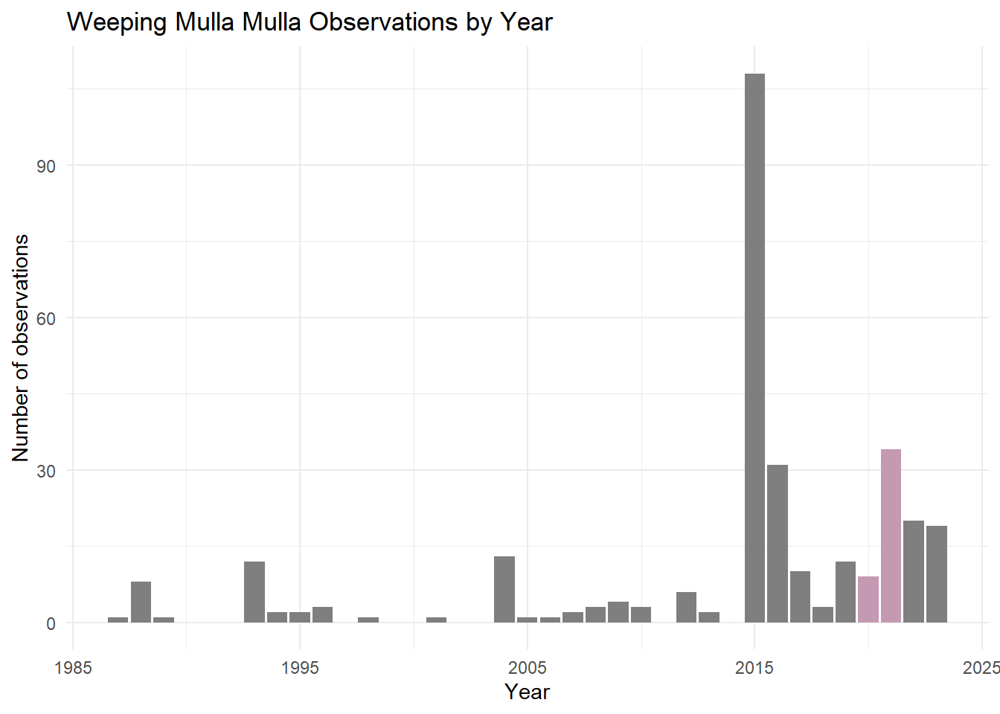

Team name: ACDC Team members: Khuyen Nguyen & Khanh Pham kngu0086@student.monash.edu,
Introduction
The Ptilotus calostachyus F.Muell, which is also known as the Weeping Mulla Mulla, is an endemic plant that is commonly found in the Western Australia territory (Florabase n. d.). This species thrives in arid region, particular in sandy habitats with red and stony plains(1). Being a perennial plant, it can live up to more than two years with the seasonal pattern of being dormant in the winter and sprouting again in springtime - (1). Moreover, Weeping Mulla Mulla displays erect or spreading, herb or shrub characteristics, meaning that it can be found as a tall plant and/or covering an area, as well as with/without a woody body. They can grow from 0.2 to 2 meters tall with pink-white flowers, blooming from March to October. Despite the widespread of its coverage, there are little to none organized sighting campaign of the Weeping Mulla Mulla due to the outback nature of its habitat and lesser popularity as compared to other iconic Australia ecotourism species.
Five expectations when exploring the Weeping Mulla Mulla sighting:
We expect most of the sightings to occur between March to October.
We expect most of the sighting location to be in the Western Australia territory.
We expect the sightings to be consistent numbers of sightings with an increasing trend as sighting/reporting/monitoring methods become better.
We expect the sightings to be clustered in areas with a water source as the plant prefer harsh, dry, and hot sandy habitats.
We expect the sightings records to increase after rainfall events, as plants typically begin to bloom after wet season, which is around June - August for Perth.
The basis of record was filtered to HUMAN_OBSERVATION only. This decision was made because we intended to focus solely on sightings of the species in the wild, and differentiate between specimens that were preserved, collected samples, or in controlled environments such as museums.
We have also checked the BASIS_OF_RECORD_INVALID to determine the reliability of each observation, in which all the TRUE results were removed in the process of sub-setting HUMAN_OBSERVATION entry in the basisOfRecord.
The other options, such as LIVING SPECIMEN, could imply captivity or control, PRESERVED SPECIMEN typically refers to non-living specimens, and OCCURRENCE was too general to confirm its wild state.
Checking queue
Current queue size: 1 inqueue running
The data is from the Atlas of Living Australia website aggregates multiple data sources and includes variables indicating location, date, time, scientific name, resource names, and species status. There are 357 observations and 15 variables in the raw data set.
For our analysis, we will primarily utilise the location and event time data. However, a comprehensive dictionary is provided below:
Variable
Description
decimalLatitude
Latitude value of sighting in decimal format.
decimalLongitude
Longitude value of sighting in decimal format.
eventDate
Recorded sighting date and time in the format YYYY-MM-DD, hh:mm:ss. In some cases, no time was recorded, and therefore, it is left as 00:00:00.
The distribution of the Weeping Mulla Mulla commonly spans the local government areas (LGAs) of Ashburton, Broome, Derby-West Kimberley, East Pilbara, Halls Creek, Karratha, Laverton, Meekatharra, Ngaanyatjarraku, Port Hedland, Upper Gascoyne, Wyndham-East Kimberley, as per (Florabase).
As such, we can subset the temperature data for some of these specific suburbs.
We will be using visdat library to check for data type errors
library(visdat)vis_dat(weeping_mulla_mulla)
Discussion The result of visdat does not signify any anomalies that needed to be addressed before proceeding with further analysis.
vis_guess(weeping_mulla_mulla)

Discussionvis_guess shows that the longitude and latitude columns both have a record with potentially integer coordinates entry. While this is a sign of rounding given that the coordinates span from a length of values with 5 decimal places precision, we believe this value does not need any alterations as sighting coordinates span across a very wide geographical area, making rounding to the nearest whole number (1.0 degree is 111 kilometers) insignificant in our spatial analysis.
Exploratory data analysis
Spatial expectation
data(world, package ="spData")australia <- world[world$iso_a2 =="AU", ]australia_plot <-ggplot(australia) +geom_sf(fill ="#5b9b2e")combined_plot <- australia_plot +geom_point(data = weeping_mulla_mulla,aes(x = longitude, y = latitude),colour ="#c599b2",) +labs(title ="Weeping Mulla Mulla Sightings Across Australia", x ="Longitude", y ="Latitude", subtitle ="1987 - Present") +theme_minimal()combined_plot
Temporal expectation
We expect sightings of the Weeping Mulla Mulla to be more frequent from March to October. This expectation aligns with our observations, as there are fewer points on the map in January, February, November, and December.
So far, the map data has shown us the areas where observations are most frequent. We can see that there are primarily two clusters, one in Western Australia and another in the Northern Territory. These clusters are also evident on some of the maps by month.
Trend expectation
weeping_mulla_mulla %>%group_by(Year) %>%count() %>%ggplot(aes(x = Year, y = n, fill =as.factor(Year))) +geom_histogram(stat ="identity") +scale_fill_manual(values =c("2020"="#c599b2", "2021"="#c599b2")) +labs(title ="Weeping Mulla Mulla Observations by Year",y ="Number of observations" ) +theme_minimal() +theme(legend.position ="none", legend.title =element_blank())

We can see that the yearly observations do not meet our expectation of reduced observations during COVID-19. There was no decrease in observations from 2000 to 2021.
We expect sightings of the Weeping Mulla Mulla to be more frequent from March to October. This expectation aligns with our observations, as there are fewer points on the map in January, February, November, and December.
So far, the map data has shown us the areas where observations are most frequent. We can see that there are primarily two clusters, one in Western Australia and another in the Northern Territory. These clusters are also evident on some of the maps by month.
Seasonality expectation
To test whether our expectation that the Weeping Mulla Mulla becomes more active after rainfall seasons is accurate, we decided to plot the occurrences by month. While there are some indications from the previous Temporal expectation section, where June to August plots show considerably more observation points, we would like create a bar plot for a better visualization inference.
weeping_mulla_mulla %>%group_by(monthName) %>%count() %>%ggplot(aes(x = monthName, y = n, fill =as.factor(monthName))) +geom_bar(stat ="identity", col ="#5b9b2e") +scale_fill_manual(values =c("Jun"="#c599b2", "Jul"="#c599b2", "Aug"="#c599b2")) +labs(title ="Weeping Mulla Mulla Observations by Month",y ="Number of observations",x ="Month" ) +theme_minimal() +theme(legend.position ="none", legend.title =element_blank())

Interestingly, we observe decreased sightings during June and July while August has the highest sighting occurrences. March marks the start of the blooming cycle with April and May being the autumn season in Western Australia (Tourism Australia n. d.), which has occasional showers. This explains the large rise in sightings for these months. However, the main raining events (June to August) saw significantly lower occurrences - we believe this is due to thunderstorms and flooding, preventing casual observers to stumble upon these plants. Only August has high sighting occurrences, as the end of winter has milder downpours.
Habitat expectation
Given that the Weeping Mulla Mulla prefers stony and sandy environments, we expect the plants to be sighted near areas with freshwater such as river banks,… Moreover, observations by travelers might be more likely to be located near and/or on the way to a water source. To test our this expectation, we deploy a leaflet map, which displays geographical features such as subsurface water, creeks, lakes, and rivers.
Due to the zoom level, we could not see the water body features of the map; Therefore, we decided to investigate a cluster of sightings near Ali Curung.
library(leaflet)weeping_mulla_mulla %>%leaflet() %>%addProviderTiles("Esri.DeLorme") %>%setView(lat =-20.9358, lng =134.2996, zoom =10) %>%addCircleMarkers(lng =~longitude, lat =~latitude, stroke =FALSE, fillOpacity =0.3, color ="#5b9b2e")
Based on the map above, we can see that the main cluster of Weeping Mulla Mulla does not live near a water source, which is different from what we expected. This suggests that the plant is dependent on rain, meaning that high precipitation periods might lead to higher sightings. It is also interesting to see that these sightings were near the National 87 road, implying that these reports were made by passersby.
Summary
References
Florabase, Ptilotus calostachyus F.Muell., Retrieved September 29, 2023, from https://florabase.dbca.wa.gov.au/browse/profile.php/2704
TravelOnline Australia Pty Ltd. Western Australia Weather & Climate. Retrieved September 27, 2023, from https://www.travelonline.com/western-australia/weather
The Atlas of Living Australia. Ptilotus calostachyus F.Muell.Retrieved September 27, 2023, from https://bie.ala.org.au/species/https://id.biodiversity.org.au/node/apni/2910906#overview